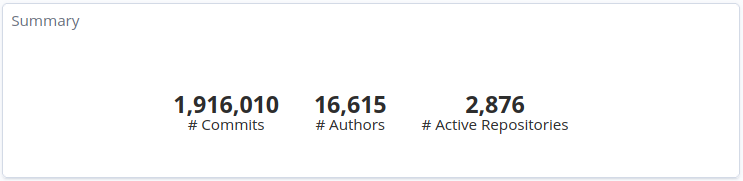
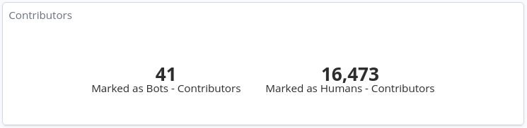
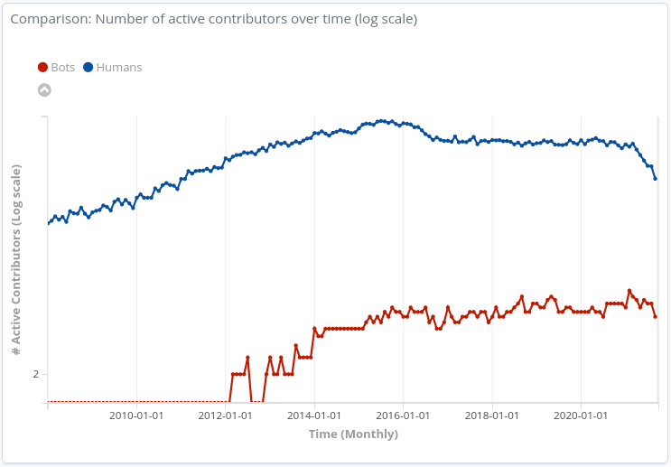
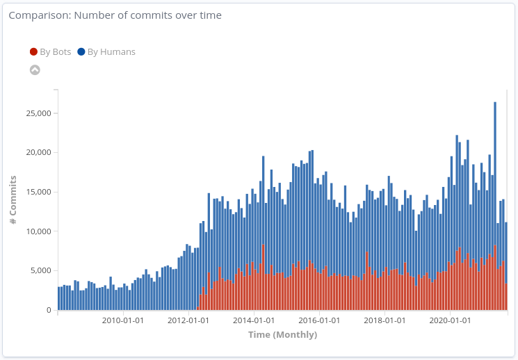
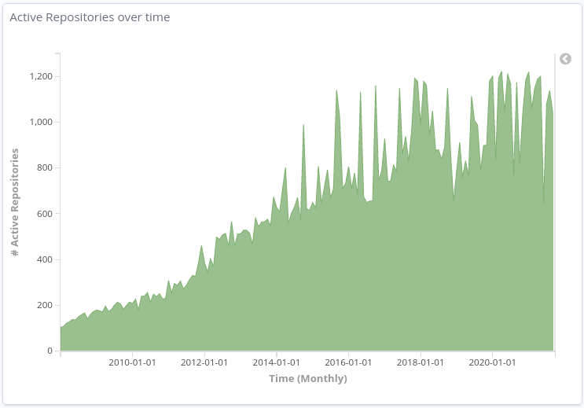

Wikimedia Foundation has the Wikimedia Tech community metrics dashboard, which is a running GrimoireLab instance maintained by Bitergia dedicated to get activity metrics from the Wikimedia Tech community. In their public documentation it is linked to the list of repositories they are tracking for their community metrics dashboard.
I decided to set up a local GrimoireLab instance with a subset of the projects. As the main goal of this project is to detect automated accounts out of human accounts, I decided to apply a first filter to exclude most of Wikimedia’s research projects. Research projects usually don’t have the desired scale nor the level of activity required for the classification stage. Also, the results could not be as much generalized to other projects and communities.
As for the selected data sources to analyze, this project is focused on the data from Git. Some of the selected repositories were stored on GitHub, others were stored in a Wikimedia-managed Gerrit instance.
Data overview
GrimoireLab downloads each Git repository and parses the Git log, storing all the history of commits. From this record per repository, GrimoireLab composes a JSON document per commit, with a set of fields that reflects the information associated with it, such as the unique identifier hash, the number of modified lines, the number of modified files, the commit message, and more. Then, there is another internal process where this data gets complemented with extra fields, such as the identity information matched with the one from the identity management system and some pre-processed fields that allow aggregating the data in a simpler way in Kibana, the visualization layer form the Elastic stack.
Summarizing, the git index stores one document per commit, with a set of fields whose meaning is described in the corresponding data schema.
The extracted data considers Git commits submitted from January 1st, 2008 to September 15th, 2021. From the configured repositories, we have logs from 2,876 out of 2,988 repositories.
Dashboard showing the data obtained with GrimoireLab
Data curation: identities management
The next step is to curate the identities’ information. The GrimoireLab tool managing this process, SortingHat, offers mechanisms to automatically improve some key data.
Regarding account-merging, SortingHat offers many possibilities to merge profiles based on different fields from individuals (email, name and username) both individually or jointly. As we are not assuming any information, the safest approach was to merge profiles by their email. That is, if there are two or more individuals using the same email account, they are merged into the same profile.
Then, it comes the affiliation information. SortingHat offers a way to automatically enroll individuals in an organization based on the email domain from the profile. This is done by using an organization-domain map (e.g.: Domain is linked to the organization “Wikimedia Foundation”.
Having said this, SortingHat does not have any automated way to detect which individuals are automatics accounts Bots, and this is where the proposed tool, Revelio, comes to play.
In order to identify which individuals were bots, I followed two approaches: * The first step consisted of taking all the accounts which were already identified as “Bots” by the Wikimedia tech community itself in a dedicated Affiliations dashboard, filtering in Bot individuals (author_bot:true) from their ElasticSearch git index. * Second, I manually reviewed the rest of the individuals to identify potential bots and then confirm they were looking at their activity. A total of 41 bot individuals were identified, out of 16,284. With this information, I composed a SortingHat-supported file with the information of each Bot individual, for replication purposes.
Example of a profile marked as Bot in HatStall, the current interface for SortingHat
Initial exploration
GrimoireLab downloads each Git repository and parses the Git log, storing all the history of commits. From this record per repository, GrimoireLab composes a JSON document per commit, with a set of fields that reflects the information associated with it, such as the unique identifier (hash), the number of modified lines, the number of modified files, the commit message, and more. Then, there is another internal process where this data gets complemented with extra fields, such as the identity information matched with the one from the identity management system and some pre-processed fields that allow aggregating the data in a simpler way in Kibana, the visualization layer form the Elastic stack.
Summarizing, the git index stores one document per commit, with a set of fields whose meaning is described in the corresponding data schema.
For the selected period of time, these were the overall numbers in terms of commits:

Overall numbers
And these were the overall numbers in terms of contributors:

Number of active contributors
Here are the number of active contributors over time (monthly), splited by those tagged as “Bots” and the those who were not (note that the graph is shown in logaritmic scale):

Number of active contributors over time
These are the number of commits submitted over time (monthy), splited by those submitted by individuals tagged as “Bots” and those who were not:

Number of commits over time
And the following graph shows the number of active repositories over time (monthly), during the selected period of time:

Active Repositories over time
Objectives: Goals and questions
Goal 1
Have an automatic process to discriminate between human users and Bot accounts, integrated with the GrimoireLab toolset.
Questions
Q1.1. How to separate bot accounts from human users?
Q1.2. Is the profile information from a given individual enough to classify it as human or Bot?
Q1.3. Are there differences between the activity generated by humans and bots?
Goal 2
Find which channels and footprints can be used to classify a user as human or Bot.
Questions
Q2.1. Are there any particular channels and footprints, as a combination of interac- tions which can be used to classify a user as human or bot?
Q2.2. Message content (commit messages, issue texts, etc.) can be used to validate this classification?
Q2.2.1. Does a richer syntax give a hint about the nature of the user?
Q2.2.2. Can the entropy of a comment give a hint about the nature of the user?
Q2.3. Do working hours and frequency of contributions help on this classification?
Metrics
Git (commits), per individual
M1: Number of commits by a given uthor.
M2: Number of modified files per commit by a given author.
M3: Number of added lines per commit by a given author.
M4: Number of removed lines per commit by a given author.
M5: Length of the commit message per commit by a given author.
M6: Richness of the syntax of a given author.
M7: Number of verified (signed-off) commits by a given author.
M8: Commit frequency (Time between commits) by a given author.
M9: Number of commits submitted during working days by a given author.
M10: Number of commits submitted during weekends by a given author.
M11: Number of unique repositories where the commits from a given author come from.
M12: Does the author name contain any keywords?
M13: Is the author marked as bot?
Extracting the data from ElasticSearch
The piece of code in charge of retrieving this data is the script ES-extract-datasets.py.
A first process executes a bucket aggregation using the unique identifier for the contributor identities, author_uuid. This first query produces a list of contributors sending commits during a given period of time. Then, a second process executes a query for each author to retrieve the history of commits, asking for the fields that were defined in the following table:
Field name
Field description
author_bot
Boolean value, true if the given author is identified as a bot in SortingHat
author_date
Author date (when the original author made the commit)
author_name
Author name from SortingHat
author_uuid
Author UUID from SortingHat
commit_date_weekday
Day of the week when the committer made the commit
commit_name
Committer name
files
Number of files touched by this commit
grimoire_creation_date
Commit date (when the original author made the commit)
hash
Commit hash
lines_added
Number of lines added by this commit
lines_removed
Number of lines removed by this commit
message
Commit message as a single String
time_to_commit_hours
Time in hours from author date to commit date
repo_name
Repository the commit was submitted to
utc_commit
Commit date in UTC
Although the results are paginated, this process is split by monthly date ranges from the main time period considered for the study, in this case from January 1st, 2008 to September 15th, 2021.
The output is a set of JSON files, one per unique contributor, containing the targeted variables for all of the commits.
Studying the “contributors dataset”
As the Revelio tool is meant to be integrated with SortingHat, the decision was to use the unique individuals as the entry values for the classification model, which will predict if a given contributor is a bot or not.
Our first data-set is composed by single commits per author, and our new data-set needs to have one entry per contributor, which mens we need ways to represent the information from the history of commits for each author. Following the metrics defined using the GQM approach, data is processed as follows, with this list of variables per contributor:
The unique identifier of the author from SortingHat, used as the index field.
The name of the author from SortingHat.
The classification of the author as a bot or not, from SortingHat.
The number of unique commits.
The number of merge commits, which are the ones modifying no files.
The number of commits submitted during weekends (either on Saturday or Sunday).
The number of commits that have been signed off.
The unique number of repositories an author contributed to.
Apart from these variables, another set is defined from statistical calculations:
The ratio of merge commits, over the total number of commits.
The ratio of commits submitted during weekends, over the total number of commits.
The ratio of merge commits over the total number of commits.
The ratio of signed commits over the total number of commits.
The median and the interquartile range for:
the number of modified files per commit.
the number of added lines per commit.
the number of removed lines per commit.
the length of the commit message.
the number of words (including stop-words) of the commit messages.
For this last set of statistical calculations, it is necessary having a minimum amount of commits per author. In order to avoid having data from pet projects and casual users (for example, some contributors only submit a small number of contributions as part of a learning course), an additional criterion is to ignore those authors having less than 10 commits for the selected time period. The script performing this processing is build-classifier-input.py.
Code
# Avoid to regenerate the plots if it is not needed (it takes a lot of time)REGENERATE_PLOTS =Trueimport pandas as pdimport numpy as nppd.options.mode.chained_assignment =None# default='warn'data_path ='./datasets'df_git = pd.read_json('{}/df_git.json'.format(data_path), orient='records', lines=True)(num_rows, num_cols) = df_git.shapeprint('The filtered dataset contains {} rows (authors) and {} columns (variables).'\ .format(num_rows, num_cols))
The filtered dataset contains 3347 rows (authors) and 21 columns (variables).
Code
# Make sure all the data types are correct convert_dict = {'git__num_commits': int,'git__num_repos': int,'git__num_merge_commits': int,'git__num_weekend_commits': int,'git__num_signed_commits': int,'git__ratio_merge_commits': float,'git__ratio_weekend_commits': float,'git__ratio_signed_commits': float,'git__median_files': float,'git__iqr_files': float,'git__median_lines_added': float,'git__iqr_lines_added': float,'git__median_lines_removed': float,'git__iqr_lines_removed': float,'git__median_len_commit_message': float,'git__iqr_len_commit_message': float,'git__median_len_words_commit_message': float,'git__iqr_len_words_commit_message': float,'author_bot': bool }df_git = df_git.astype(convert_dict)
This is how the first rows of the “contributors dataset” looks like, ommiting contributor names for privacy concerns.
Code
# Let's show how the "contributors dataset" looks like, ommiting contributor names for privacy concerns.df_git[df_git.columns.difference(['author_name'])].head()
author_bot
author_uuid
git__iqr_files
git__iqr_len_commit_message
git__iqr_len_words_commit_message
git__iqr_lines_added
git__iqr_lines_removed
git__median_files
git__median_len_commit_message
git__median_len_words_commit_message
git__median_lines_added
git__median_lines_removed
git__num_commits
git__num_merge_commits
git__num_repos
git__num_signed_commits
git__num_weekend_commits
git__ratio_merge_commits
git__ratio_signed_commits
git__ratio_weekend_commits
0
False
39b23ad68a2ca87cb28af6d571a31fe9fd72a366
5.0
26.00
7.00
67.0
39.00
4.0
70.0
11.0
33.0
4.0
16
0
2
0
2
0.000000
0.0
0.125000
1
False
2d563cc8a74c8f8b7a4ad8e36ab3f810c227f464
4.0
52.50
5.50
40.5
25.50
2.0
45.0
6.0
10.0
4.0
163
11
4
0
45
0.067485
0.0
0.276074
2
False
ed35b70452aa12dfa89cfdef83877b669132f35f
0.0
80.75
12.75
116.5
1.75
1.0
102.0
8.5
68.0
0.5
10
0
2
0
3
0.000000
0.0
0.300000
3
False
3e6c85aacf2fd8f5310154f4d93f1cc033ca986f
1.0
81.00
10.00
18.0
7.00
1.0
124.0
12.0
5.0
2.0
463
58
32
0
23
0.125270
0.0
0.049676
4
False
3fe285cb6de486fb36d57de48f4cb618a07d70cc
7.0
36.50
5.50
190.5
45.00
2.0
71.0
11.0
28.0
6.0
19
0
1
0
1
0.000000
0.0
0.052632
Variable types
The variables from this data set can be groupped according to the type of their values:
Quantitative variables: 19
Discrete: 6
Continuous: 13
Categorical variables: 3
Variable
Description
Type
Index
Row index
Quantitative, discrete
author_uuid
Unique identifier of the individual, from GrimoireLab’s SortingHat
Categorical
author_name
Name of the individual, as it appears on GrimoireLab’s SortingHat
Categorical
author_bot
Boolean value, True if the individual corresponds to a “Bot”; False otherwise
Categorical, binary
git__num_commits
Number of unique commits submitted by this individual, for the given period of time
Quantitative, discrete
git__num_merge_commits
Number of “merge” commits submitted by this individual, for the given period of time
Quantitative, discrete
git__num_weekend_commits
Number of commits submitted by this individual during weekends (saturday or sunday), for the given period of time
Quantitative, discrete
git__num_signed_commits
Number of signed commits, for the given period of time
Quantitative, discrete
git__num_repos
Number unique repositories the author contributed to, for the given period of time
Quantitative, discrete
git__ratio_merge_commits
Ratio, number of “merge” commits divided by the total number of commits. 0 if there are not “merge” commits
Quantitative, continuous
git__ratio_weekend_commits
Ratio, number of commits submitted during weekends divided by the total number of commits. 0 if there are not commits submitted during weekends
Quantitative, continuous
git__ratio_signed_commits
Ratio, number of signed commits divided by the total number of commits. 0 if there are not signed commits
Quantitative, continuous
git__iqr_files
Interquartilic range, computed over the number of files modified per commit, for all the commits submitted by this individual
Quantitative, continuous
git__median_files
Median of the number of files modified per commit, for all the commits submitted by this individual
Quantitative, continuous
git__iqr_lines_added
Interquartilic range, computed over the number of lines added per commit, for all the commits submitted by this individual
Quantitative, continuous
git__median_lines_added
Median of the number of lines added per commit, for all the commits submitted by this individual
Quantitative, continuous
git__iqr_lines_removed
Interquartilic range, computed over the number of lines removed per commit, for all the commits submitted by this individual
Quantitative, continuous
git__median_lines_removed
Median of the number of lines removed per commit, for all the commits submitted by this individual
Quantitative, continuous
git__iqr_len_commit_message
Interquartilic range, computed over of the number of characters from each commit message, for all the commits submitted by this individual
Quantitative, continuous
git__median_len_commit_message
Median of the number of characters from each commit message, for all the commits submitted by this individual
Quantitative, continuous
git__iqr_len_words_commit_message
Interquartilic range, computed over the number of words[1] from each commit message, for all the commits submitted by this individual
Quantitative, continuous
git__median_len_words_commit_message
Median of the number of words[1] from each commit message, for all the commits submitted by this individual
Quantitative, continuous
[1] Words are counted as groups of characters splitted by whitespace characters within a commit message.
The main dataset needs to be split into subsets for the classification stage: * one for training (60% of the samples) * one for testing (25% of the samples) * another one for validation (15% of the samples).
These subsets need to be statistically similar, so the sample needs to be stratified in order to keep the human/bot proportion. The method train_test_split from Scikit-Learn’s model_selection module was used to obtain these subsets, by using the option stratify.
Code
from sklearn.model_selection import train_test_split# Separate target variabley_git = df_git.pop('author_bot')# Divide the Dataset into 60% training and 40% test + validationX_train_git, X_test_tmp_git,\y_train_git, y_test_tmp_git = train_test_split(df_git, y_git, test_size=0.4, random_state=22, stratify=y_git)# From 40% of the original dataset, 25% is for test and 15% is for validation# This means we have to split the test+validation set in a 62,5%/37,5% ratioX_test_git, X_val_git,\y_test_git, y_val_git = train_test_split(X_test_tmp_git, y_test_tmp_git, test_size=0.375, random_state=22, stratify=y_test_tmp_git)
Pre-processing of the Training Dataset
Detection and processing of missing data: Training dataset
The data is provided by the GrimoireLab tool set, and the dataset is a collection of information from Git commits. The fields and the information per commit are expected to be standard.
As we are building in a later step a custom dataset summarizing information per author, we are not having missing data except for author-related information, such as the author’s name, username, or email (at least one of these three variables has to have a non-empty value).
Most of the features from this dataset are quantitative variables, as they are representing a summary of the information obtained from the set of commits submitted by each unique author.
The first examination shows that most of these quantitative variables have remarkably uneven statistical distributions. There are huge differences in the ranges of values, and also these values are widespread. Under this situation, the approximation to take was to apply mathematical functions helping to scale these values. Although several transformations were tested, most of the variables have been transformed using a customized logarithmic function[1] or the squared root function.
The next pairs of images show the frequency distributions of both the original variable (left) and the transformed one (right).
Most of the variables from this data-set are quantitative. Nonetheless, the statistical distribution of some of them points a need to generate qualitative, binary variables derived from them. These variables have a high bias. Looking at the statistical distribution, the general rule is observing a high peak in “0” value and then the rest of the results are spread over the histogram.
For this reason, these variables are transformed into binary variables. This transformation also makes sense in a conceptual way. For instance, looking at the number of merge commits, instead of counting how many of them there are, it is more meaningful knowing if a given author submitted merge commits or not.
The variables transformed into binary are:
Former field
Transformed field
Meaning
git__num_merge_commits
git__has_merge_commits
“1” if a given author has submitted at least 1 merge commit. “0” otherwise
git__num_weekend_commits
git__has_weekend_commits
“1” if a given author has submitted at least 1 commit during weekends (Saturday or Sunday). “0” otherwise
git__num_signed_commits
git__has_signed_commits
“1” if a given author has submitted at least 1 signed commit. “0” otherwise
git__median_lines_added
git__mostly_not_adding_lines
“1” if the median of added lines for that author is “0” (this author is not adding lines in at least 50% of the commits), “0” otherwise
git__median_lines_removed
git__mostly_not_removing_lines
“1” if the median of removed lines for that author is “0” (this author is not removing lines in at least 50% of the commits), “0” otherwise
Heuristic terms
The heuristic terms in the table belong to the application domain, using terminology of the tasks the bots are usually performing in software repositories. With these terms, a set of dummy variables is created with one column per term, where the value is “1” (True) when the term from that column is included in the author’s name; and “0” (False) if is not included. For instance, a user named ghmerger would have a “1” value in the merge and merger columns, and a “0” value in the rest of the columns.
Additionaly, there is another binary variable summarizing if the author name contains any of these terms: git__author_name_has_term.
Nonetheless, this approach was adding too much complexity to the system. After several experiments, the decision was to summarize the inclusion of these terms into a “terms score”. The idea was to classify the heuristic terms in three different levels assigning weights to each of them, according to their relevance in the application domain. Doing so, an author name having one or more terms from the list would have a greater value, also taking into account their relevance by using these levels. Having a score of 0 means the author_name field doesn’t include any of the relevant terms.
Let’s represent the frequncy distribution of the new “Terms score” variable and test how it looks like when it is transfomed. As we are interested in having a variable representing a wide range of values, we decided not to normalize the value nor transform it.
Code
# Represent the frequncy distribution of the new "Terms score" variable# and test how it looks like when it is transfomed. fig, axs = plt.subplots(1, 2, figsize=(15, 8))sns.histplot(data=X_train_git, x="terms_score", stat='frequency', kde=True, color="skyblue", ax=axs[0])sns.histplot(data=X_train_git, x="log_terms_score", stat='frequency', kde=True, color="teal", ax=axs[1])plt.show()
One of the main challenges of this classification is the imbalance in the target class we are aiming to detect. This context was taken into account when splitting the main dataset into the training, test, and validation tests, but it needs another processing stage before they feed the different classification models. Looking at the techniques that are commonly used to reduce the effect of imbalanced data, the one selected was SMOTE.
SMOTE consists of an algorithm generating new samples considering the k-nearest neighbors from each original sample from the training set. Each newly generated sample is interpolated between the original sample and one of the nearest neighbors; with a random component \(\lambda\), which takes value in the range \([0, 1]\).
To apply SMOTE, we rely on the implementation under the over_sampling module from the Python library imblearn.